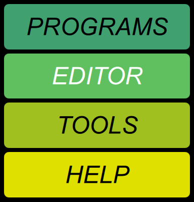

Screen buttons

At any time you can tap one of these to display the corresponding screen in the rest of the Toolkit window.
The PROGRAMS screen is where you select programs, rearrange them, modify their names or descriptions, delete them, or set up links to them. It normally shows one bank of programs, but has buttons to select any of the nine banks, and can be split between two banks so that you can move programs between them. Normally, the current bank is selected, meaning that it will show whatever bank contains the current program, even if you select a program in a different bank from the Chroma’s control panel.
The EDITOR screen is where you edit programs. It is by far the most complicated screen, because the Digital Chroma is a pretty complicated instrument.
The TOOLS screen is where you manipulate the global parameters that control the overall operation of the Digital Chroma, and perform other utility functions.
The HELP screen is what you’re looking at now. Complete documentation is provided for both the Toolkit and the Digital Chroma itself.
If you long-press this button, it selects this screen and switches to the Home page.
You can also click on various  buttons in other screens, to switch to this screen and bring up a relevant
help page.
buttons in other screens, to switch to this screen and bring up a relevant
help page.
Hotkeys
Pressing P, E, T, or H on the keyboard is another way to switch screens.